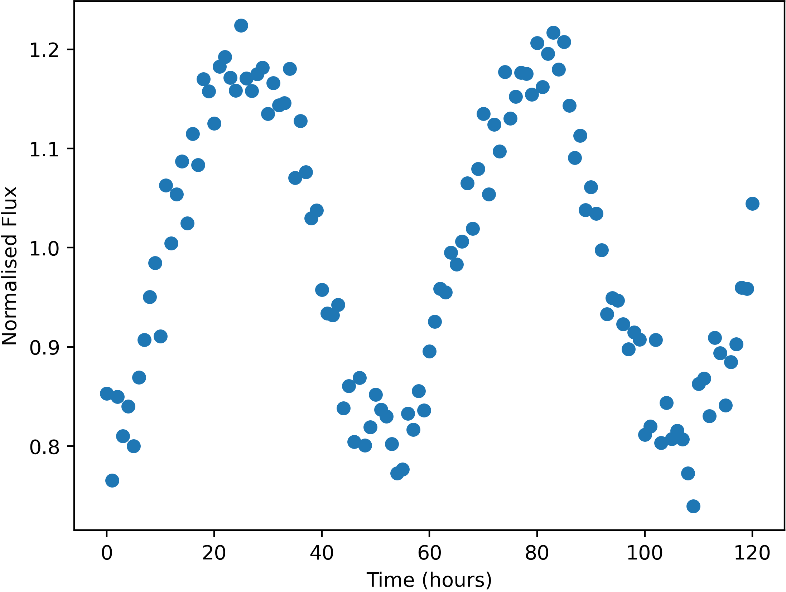

Some stars in the sky were found to change in apparent brightness over time, usually following a periodic trend.

Example of a variable star lightcurve - star FrontS91476
Units of the variable data are:
Uncertainties in this data (one standard deviation) are:
Here is a list of the flashes detected, with their approx. positions and number of photons detected. Positions are given by where they would appear in the relevant wide-field camera image. Positions are only accurate to 0.05 degrees (one standard deviation).
The X-Ray camera is sensitive to burts of more than 174 photons only.
| Name | Direction | X | Y | Photon-Count |
|---|---|---|---|---|
| FE01 | Left | -14.00 | 8.07 | 692 |
| FE02 | Top | -22.31 | -9.93 | 232 |
| FE03 | Bottom | 25.22 | -28.43 | 522 |
| FE04 | Front | 0.06 | 16.39 | 6869 |
| FE05 | Back | 6.05 | 30.41 | 1053 |
| FE06 | Left | -26.93 | 11.74 | 375 |
| FE07 | Back | -27.62 | -5.18 | 355 |
| FE08 | Top | 27.00 | 14.33 | 61113143745 |
| FE09 | Right | -0.29 | -33.60 | 434 |
| FE10 | Right | 30.86 | -10.34 | 391 |
| FE11 | Front | -9.81 | -38.18 | 1282 |
| FE12 | Right | 12.31 | 25.44 | 2320 |
| FE13 | Right | 19.45 | 4.92 | 1412 |
| FE14 | Right | 31.09 | -10.29 | 473 |
| FE15 | Front | -35.90 | -33.68 | 401 |
| FE16 | Left | -14.24 | 8.23 | 658 |
| FE17 | Top | 40.78 | -3.19 | 968 |
| FE18 | Back | 1.37 | 22.15 | 2531 |
| FE19 | Left | 6.69 | -2.87 | 412 |
| FE20 | Front | 8.86 | -14.24 | 141573 |
| FE21 | Back | -32.95 | -17.21 | 296 |
| FE22 | Back | -1.44 | 30.11 | 648 |
| FE23 | Back | -34.63 | -32.45 | 399 |
| FE24 | Right | 0.63 | -15.07 | 500 |
| FE25 | Front | -10.49 | -15.78 | 508 |
| FE26 | Left | 38.81 | 27.77 | 166976 |
| FE27 | Top | -41.74 | 34.56 | 338 |
| FE28 | Right | 12.31 | 25.44 | 2300 |
| FE29 | Back | -33.04 | -17.11 | 327 |
| FE30 | Front | 6.03 | 40.40 | 24850326 |
| FE31 | Left | -14.00 | 8.09 | 640 |
| FE32 | Right | -4.20 | 23.77 | 825 |
| FE33 | Top | -11.54 | 12.53 | 519 |
| FE34 | Top | -11.68 | 12.57 | 522 |
| FE35 | Back | -33.25 | -17.16 | 339 |
| FE36 | Right | 22.58 | 10.94 | 410 |
| FE37 | Right | -33.80 | -1.36 | 431 |
| FE38 | Front | -33.94 | -10.88 | 3909336 |
| FE39 | Bottom | -0.87 | 0.28 | 835 |
| FE40 | Bottom | -40.21 | -35.74 | 1747 |
| FE41 | Back | 6.06 | 30.42 | 1053 |
| FE42 | Right | 37.20 | 42.07 | 493 |
| FE43 | Front | -10.46 | -15.73 | 488 |
| FE44 | Right | 31.33 | -10.03 | 438 |
| FE45 | Front | -22.29 | 2.58 | 444 |
| FE46 | Front | 27.78 | -16.33 | 400 |
| FE47 | Front | -33.47 | -13.01 | 3907610 |
| FE48 | Right | 0.82 | -15.06 | 453 |
| FE49 | Left | -0.44 | 37.60 | 91443 |
| FE50 | Top | -22.09 | -9.87 | 252 |
| FE51 | Back | -33.01 | -17.13 | 328 |
| FE52 | Right | 37.95 | 41.85 | 461 |
| FE53 | Front | 11.63 | 24.71 | 442 |
| FE54 | Front | 6.90 | -31.39 | 1789 |
| FE55 | Left | -23.66 | -13.78 | 386 |